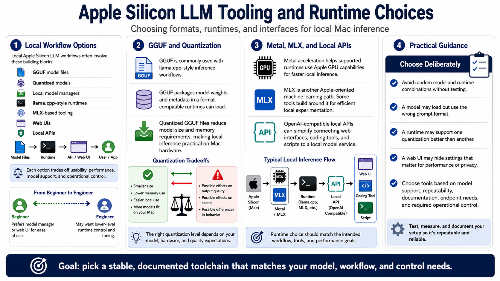

Model Formats and Runtime Options
Connecting to LMS... Progress: in progress

Narration
Local Apple Silicon LLM workflows often involve GGUF model files, quantized models, local model managers, llama.cpp-style runtimes, MLX-based tooling, web UIs, and local APIs. Each option has a different balance of usability, performance, model support, and operational control. A beginner may prefer a model manager or web UI, while an engineer may want lower-level control over runtime settings.
GGUF is commonly associated with llama.cpp-style inference workflows. It packages model weights and metadata in a format compatible runtimes can load. Quantized GGUF files are especially popular because they reduce model size and memory requirements. That can make local inference practical on Mac hardware, but quantization choices still affect output quality, speed, and behavior.
Metal acceleration helps supported runtimes use Apple GPU capabilities for faster local inference. MLX is another Apple-oriented machine learning path at a high level, and some tools build around it for efficient local experimentation. OpenAI-compatible local APIs can make it easier to connect web interfaces, coding tools, and scripts to a local model service. The runtime choice should match the intended workflow.
Avoid random model and runtime combinations without testing. A model may load but use the wrong prompt format. A runtime may support one quantization better than another. A web UI may hide settings that matter for performance or privacy. Choose tools based on model support, repeatability, documentation, endpoint needs, and how much operational control you need.